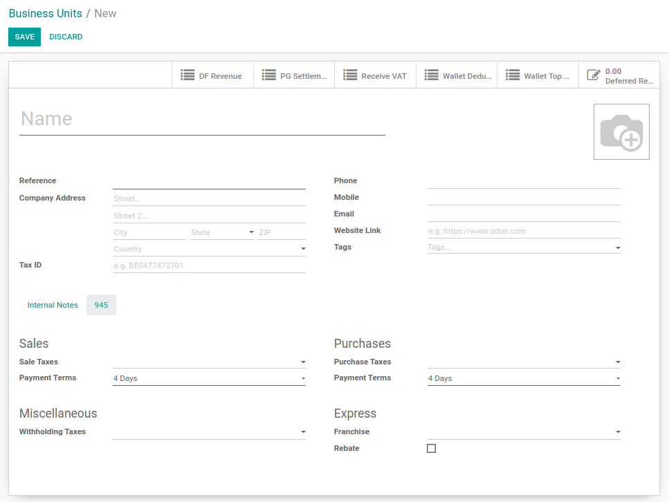
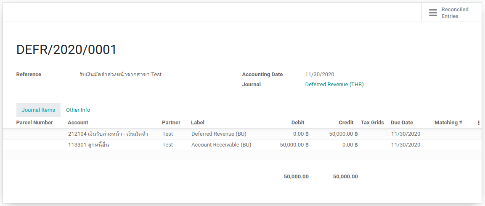
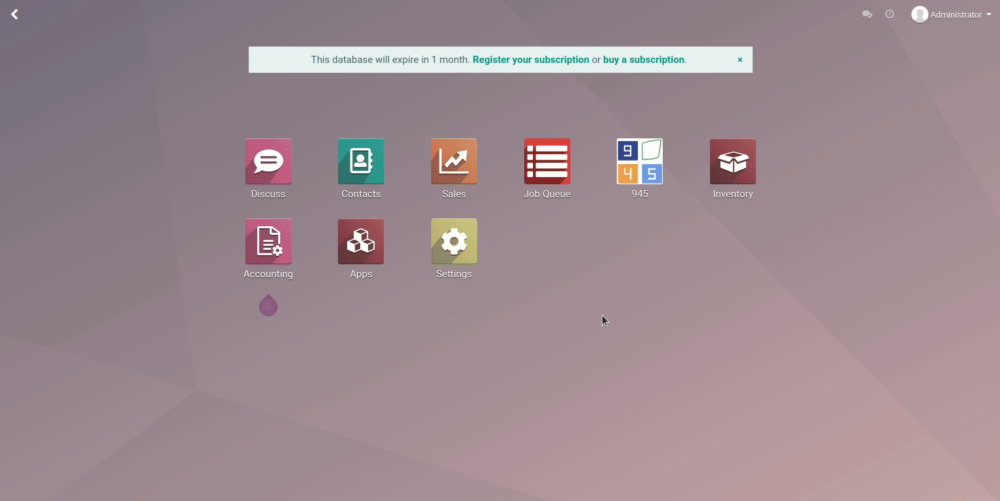
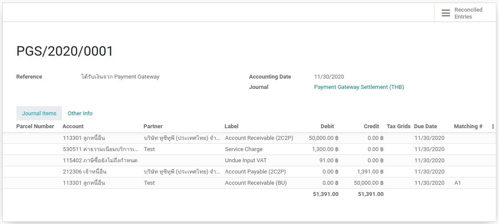
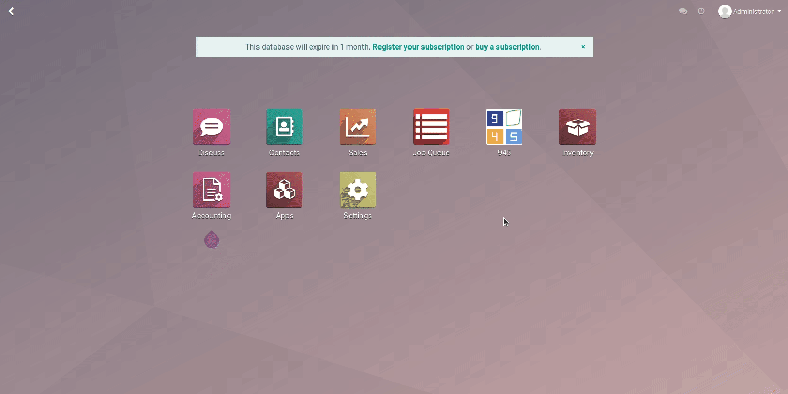

> Deferred Revenue
- สร้าง Business Unit ใน Odoo
- Deferred Revenue
- Payment Gateway Settlement
- Receive Input VAT
สร้าง Business Unit ใน Odoo

สร้าง Business Unit ใน Odoo
- เข้าไปที่ 945 > Business Unit
- กด Create แล้วใส่ข้อมูลของ Business Unit เพื่อสร้าง Business Unit
Deferred Revenue

Deferred Revenue
- เข้าไปที่ 945 > Operations > Deferred Revenue
- กด Create แล้วเลือก Business Unit และใส่จำนวนเงิน
- กด Create Move แล้วตรวจสอบข้อมูลในการบันทึกบัญชีให้ถูกต้อง หลังจากนั้นกด Create Journal Entry เพื่อสร้าง Journal Entry
Deferred Revenue
ตัวอย่างการบันทึกบัญชี

Payment Gateway Settlement

Payment Gateway Settlement
- เข้าไปที่ 945 > Operations > Payment Gateway Settlement
- กด Create แล้วเลือก Journal Entry และใส่จำนวนเงินใน Total Amount, MDR, VAT
- กด Create Move แล้วตรวจสอบข้อมูลในการบันทึกบัญชีให้ถูกต้อง หลังจากนั้นกด Create Journal Entry เพื่อสร้าง Journal Entry
Payment Gateway Settlement
ตัวอย่างการบันทึกบัญชี

Receive Input VAT

Receive Input VAT
- เข้าไปที่ 945 > Operations > Payment Gateway Settlement
- เลือกรายการที่ต้องการบันทึก Input VAT
- ไปที่ Action > Receive Input VAT ระบบจะรวบรายการต่างๆไปไว้ที่ 945 > Operations > Receive Input VAT
- เข้าไปที่ 945 > Operations > Receive Input VAT
- กด Create Move ที่รายการที่ต้องการ แล้วตรวจสอบข้อมูลในการบันทึกบัญชีให้ถูกต้อง หลังจากนั้นกด Create Journal Entry เพื่อสร้าง Journal Entry
Receive Input VAT
ตัวอย่างการบันทึกบัญชี